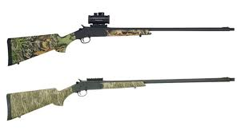

The Stevens 301 is a modern take on the classic break-action single-shot shotgun, prized for its simplicity and reliability. Manufactured by Savage Arms, it features a rugged synthetic stock and a manual hammer for straightforward, safe operation in the field. It has gained significant popularity in recent years, particularly in its "Turkey" configuration, as an affordable and highly effective platform for hunters.
| Feature | Standard Stevens 301 |
|---|---|
| Type | Single-shot, break-action shotgun |
| Caliber | 12 Gauge, 20 Gauge, or .410 Bore |
| Capacity | 1 round |
| Barrel | Length 26 inches (standard; 22" for compact models) |
| Weight | ~5.6 lbs (2.54 kg) |
| Sights | Bead front sight (Turkey models feature fiber optic) |